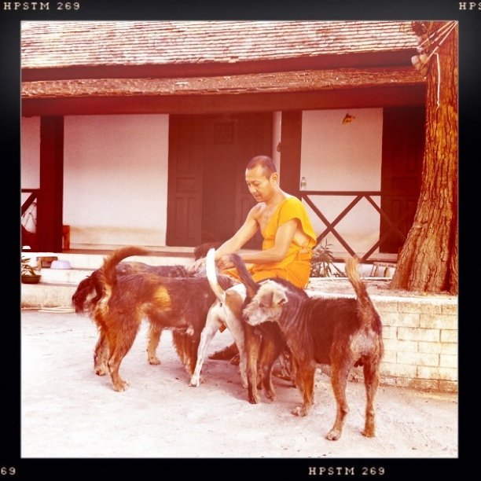

Fri, 11 Feb 2011 10:45:00 · laos · travel · luangprabang · pets
an old monk and his pets in luang prabang laos

An old monk and his pets in Luang Prabang, Laos.
Fri, 11 Feb 2011 10:45:00 · laos · travel · luangprabang · pets

An old monk and his pets in Luang Prabang, Laos.